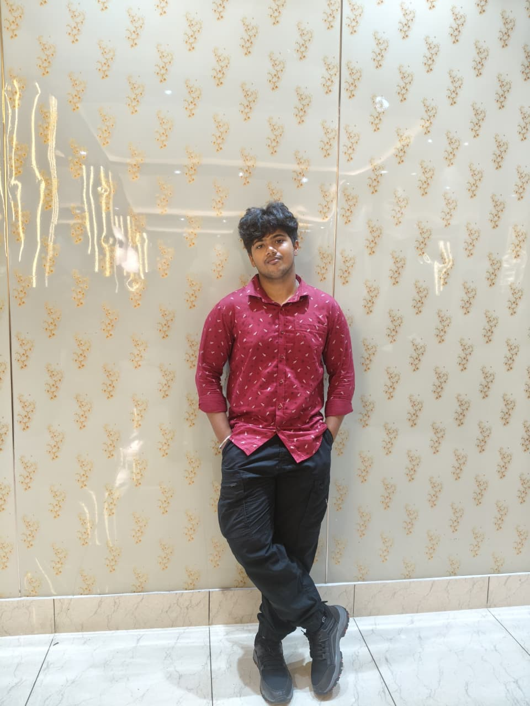

Cyber Security Intern
Thiranex · Aug–Sept 2026

I'm Arka Patra, a cyber security student and security-focused developer from West Bengal. I explore real threats such as phishing, weak passwords and prompt injection, and turn the ideas into working tools.
I study how attacks happen, then build systems that detect and explain them — from a browser-based security copilot and a document prompt-injection scanner to a desktop antivirus and a URL threat scanner.
Thiranex · Aug–Sept 2026
Phishing · passwords · prompt injection
Flask · SQLite · REST APIs
Formal study in cyber security, backed by a habit of building outside the syllabus.
Guru Nanak Institute of Technology
2024 — Present
Madhyamgram APC Vidyayatan (Boys)
2024
Madhyamgram APC Vidyayatan (Boys)
2022
Aug — Sept 2026
Hands-on security training and applied project work with guided mentorship at an MSME-registered organisation. Certificate ID THX-AUG0426-563.
Jun — Jul 2026
Deloitte, Commonwealth Bank, Datacom, BCLP and National Urban League — incident response, penetration testing, security awareness, AI-assisted research and career readiness.
2024 — Present
Eight live tools shipped with source on GitHub, from password and phishing tools to an always-on desktop antivirus. Open to internships and collaboration.
My cybersecurity journey started with curiosity — how systems are protected, how attacks happen and how technology can detect them. At GNIT I built foundations in Python, JavaScript, SQL, Flask, Linux and Git, then earned Cisco's cybersecurity and hardware certificates. Password security and phishing detection became my first builds, growing into web security, Website Security Copilot and an always-on Laptop Antivirus.
Deloitte and Commonwealth Bank simulations drilled incident response, penetration testing and security awareness. Datacom's AI program showed me AI-assisted defence and debugging, and a verified internship at Thiranex added guided, hands-on experience. I learn by building rather than only studying — and I am still building.